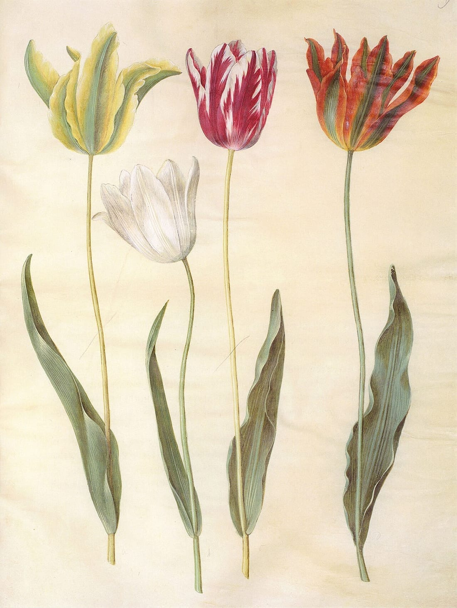

서비스 컨셉
관계와 마음을 말하면,
DearBloom이 꽃과 이유를 함께 고릅니다
DearBloom은 관계·상황·취향·추억·안전 조건을 이해해, 검증된 꽃 데이터에서 성격이 다른 꽃 3안과 선택 이유를 추천합니다.
관계와 마음 선택
STEP 01 — 02 · 상대의 취향·추억·안전 조건 입력
관계
연인
마음
먼저 손 내밀고 싶은 날
안전 조건
고양이와 살아요
AI 해석 + 검증 데이터
STEP 03 — 04
AI가 자유로운 문장을 추천 단서로 해석
“첫눈을 함께 봤어요” 같은 말에서 취향·추억·분위기 단서를 뽑습니다.
검증된 꽃말·이야기·안전 데이터가 후보 판단
사실은 데이터에서 확인하고, AI는 해석과 표현만 맡습니다.
꽃말
나라별 의미
설화·문학
반려동물 안전성
꽃 3안 + 이유 + 이야기 + 메시지 + 구매처
STEP 05 · 성격이 다른 세 갈래

안심 선택
관계와 상황에 가장 무난한 꽃

의미 선택
꽃말과 이야기가 가장 잘 맞는 꽃

대담 선택
상대의 취향과 추억을 더 강하게 반영한 꽃
FEATURE 01
선택 이유가 있는 추천
꽃 이름만 보여주지 않고 어떤 입력과 이야기 때문에 골랐는지 설명한다.
FEATURE 02
여러 갈래의 꽃말
색상·문화권·시대에 따라 달라지는 의미를 출처와 함께 보여준다.
FEATURE 03
안전을 먼저 보는 추천
고양이·강아지에게 크게 위험한 꽃은 점수를 낮추는 것이 아니라 추천 전에 제외하고, 가벼운 주의가 필요한 꽃은 그 사실을 함께 보여준다.
FEATURE 04
전달과 구매까지 연결
카드 문구, 비밀 편지, 꽃 조합, 판매처·가까운 꽃집 탐색으로 이어진다.
하고 싶은 마음부터 고르면, 꽃과 이야기가 그 마음을 전해드립니다.
서비스 컨셉
03/05